16./17.01.2023
Als nächstes kam nun Jütland - 53 - Skjern mit seinen beiden Runensteinen auf dem Kirchhof dran. Zu beiden Runensteinen gibt es zahlreiche Informationen von Rasmus Henrik Kruse (*07.08.1796 - 30.05.1877, Landschaftsmaler) und Zeichnungen von Magnus Petersen (*04.09.1827 - 01.02.1917, Archäologischer Zeichner und Restaurator). Dazu kommen meine eigenen Fotos aus dem Juni 2022. Zu beiden Runensteinen ist die Überarbeitung nun abgeschlossen.


15.01.2023
Am 13.01.2023 habe ich angefangen die Seite zu den vier Runensteinen in Jütland - 52 - Ålum in/bei der Kirche zu überarbeiten. Das hat erwartungsgemäß einige Zeit in Anspruch genommen, da die Literatur ausgewertet werden musste, die Fotos aus meiner Jütland 2022er Wikinger Tour einzupflegen waren und auch noch die Erkenntnisse aus meiner Kopenhagen Studienreise im September 2022 fehlten. Nun sind alle vier Runensteine auf dem neuesten Stand. Auf der Rückseite des Runensteins 3 findet sich diese einzigartige Reiterdarstellung (Fotoquelle: Digitale Sammlung des Nationalmuseums Kopenhagen entnommen - Lizenz: CC-BY-SA).

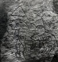
11.01.2023
Gestern habe ich der Ausstellung "Die Normannen" in Mannheim, Reiss-Engelhorn-Museen, einen zweiten Besuch abgestattet (Entfernung von mir ca. 85 km einfach). Unten habe ich ja bereits einiges zu meinem 1. Besuch am 07.10.2022 an Bildmaterial eingestellt. Damals war aber die Votivkrone von König Roger II. und die Email-Platte der Krönungsszene noch nicht ausgestellt. Die Gründe für die verspätete Anlieferung werden in diesem Video von Frau Dr. Viola Skiba erläutert.

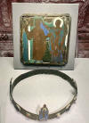

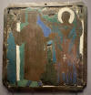

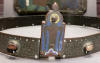
Außerdem war es mir heute möglich die Webseite zu Jütland - 51 - Grensten zu überarbeiten. Da der Runenstein bereits seit 1627 bekannt ist - auch wenn er danach mal verschwand und im Oktober 1842 wiederentdeckt wurde - war auch dieser Job zeitaufwändig. In der Königlichen Bibliothek in Kopenhagen fanden sich in den Hinterlassenschaften der Runenforscher des 19. Jahrhunderts diese tollen Zeichnungen von Magnus Petersen (*04.09.1827 - 01.02.1917, Archäologischer Zeichner und Restaurator).


09.01.2023
Zu Jütland - 49 - Borup habe ich heute die 2022er Fotos eingefügt. Ansonsten gab es zu dem Runenstein, der erst 1995 gefunden wurde, nix Neues.
Außerdem habe ich es heute kurz vor Mitternacht noch geschafft zu Jütland - 50 - Øster Bjerregrav die Aufarbeitung zu den beiden Runensteine abzuschließen. Dort gab es auch wieder tolle Zeichnungen von Magnus Petersen (*04.09.1827 - 01.02.1917, Archäologischer Zeichner und Restaurator) aus der Hinterlassenschaft von Prof. Ludv. F. A. Wimmer - Königliche Bibliothek in Kopenhagen - von 1878 und von 1892 einzupflegen.


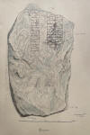

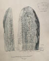
07.01.2023
Zu Jütland - 12 - Horne habe ich heute einen kurzen Bericht über eine Ausgrabung im Spätjahr 2022 eingefügt - am Ortsrand von Varde her kommend hinter der Straße "Klokkedoj" - die zur Entdeckung einer wikingerzeitlichen Besiedlung, zahlreichen handwerklich genutzten Grubenhäusern und einem Langhaus von ca. 7 m Breite und ca. 21 m Länge geführt hat. Außerdem wurde auch eine Reihe von Webgewichten zur Herstellung von groben Textilien entdeckt. Bruchstücke von der sog. Pingsdorfer Keramik fanden sich ebenfalls. Die Auswertung dauert derzeit noch an.
02.01.2023
Heute habe ich nur einige unbedeutende Veränderungen / Korrekturen an verschiedenen Seiten vorgenommen. Zu der Seite von Jütland - 28 - Gunderup (Stein 2) habe ich allerdings noch diese tolle Zeichnung von Magnus Petersen (*04.09.1827 - 01.02.1917, Archäologischer Zeichner und Restaurator) vom 10.08.1878 eingefügt, die ich doch glatt vergessen hatte.

Außerdem habe ich noch auf dieser Seite zu dem Eintrag für den Mittwoch, 28.09.2022 - Besuch der Nørregade 11, Bischofssitz Kopenhagen - die Zeichnung von Magnus Petersen zu dem Runenstein von Lund 2, der im Zugangsbereich des Bischofssitzes eingemauert ist, eingefügt.
01.01.2023 - Nachtrag am 04.01.2023 (Runensteine wurden im Jahr 1969 aus dem zuvor abgerissenen Museumsgarten in den damaligen Museumsneubau überführt).
Die Aufarbeitung der Seite zum Museum Østjylland in Jütland - F - Randers hat erwartungsgemäß mehrere Tage in Anspruch genommen, da ja insgesamt 5 Runensteine überarbeitet werden mussten - Mejlby, Randers 1, Spentrup 2, Randers 2 und Langå 4 (Reihenfolge analog Foto unten - von links nach rechts).

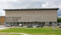

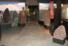
Darunter der Runenstein Randers 1, über den erstmals 1623 berichtet wurde und der danach über die Jahrhunderte in etlichen Werken Erwähnung in Wort und Bild fand. Beispielhaft gebe ich hier diese Zeichnung von Magnus Petersen (*04.09.1827 - 01.02.1917, Archäologischer Zeichner und Restaurator) wieder, die ich bei meinem Besuch in der Königlichen Bibliothek in Kopenhagen am 26.09.2022 in der Hinterlassenschaft von Prof. Ludv. F. A. Wimmer verwahrt fand.

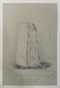
Anfang Juni 2022 wurde in den dänischen Medien auch eine Nachricht verbreitet, wonach in der Region Randers ein Runenstein gefunden wurde.
Tatsächlich fand sich in der Umgebung von Randers schon in 2020 in einem Haus aus der Mitte des 19. Jahrhunderts bei der Restaurierung der Küche unter dem Fußboden ein sehr großer rechteckiger Stein, ca. 80 cm x ca. 200 cm, knapp 900 kg schwer, der eine kurze Runeninschrift trägt. Die fünf Runen auf dem Stein sind als aft bi zu lesen. Es kann als "nach B" übersetzt werden. Er wurde eingelagert und das Nationalmuseum unterrichtet. Dann dauerte es nahezu 2 Jahre bis zur Begutachtung durch Lisbeth M. Imer (*1973, Runologin am Nationalmuseum Kopenhagen)!
Über Google Bilder kann man verschiedene Fotos dazu finden, vom Fundort, über den Abtransport bis zur Begutachtung abrufen. Irgendwann wird er wohl im Museum ausgestellt werden. Es ist übrigens der 44 Runenstein, der im Großraum Randers gefunden wurde.
28.12.2022
Heute habe ich mir die Seite zu Jütland - 47 - Spentrup vorgenommen und überarbeitet. Auch hier war relativ wenig zu erledigen, da auch dieser Runenstein erst während einer Restaurierung 1884 entdeckt wurde. In der Hinterlassenschaft von Prof. Ludv. F. A. Wimmer in der Königlichen Bibliothek in Kopenhagen wird diese Zeichnung von Magnus Petersen vom Juli 1892 verwahrt. Da er meist in Begleitung von Prof. Ludv. F. A. Wimmer unterwegs war, hat er die Zeichnung wohl am 12. Juli 1892 gefertigt, als Wimmer den Runenstein nachweislich untersuchte.

Weiterhin war es mir heute auch zeitlich möglich noch die Seite zu Jütland - 48 - Lem zu aktualsieren.
Außerdem habe ich heute beginnend mit Jütland auch auf den Objektseiten im rechten Frame die Nummerierung - aktuell bis zu 48 - Lem vorangestellt - und werde dies mit der fortlaufenden Aktualisierung der weiteren Objekte natürlich weiterführen.
24.12.2022
Der Weihnachtsbaum steht und ist geziert, da blieb noch etwas Zeit um die Seite zu Jütland - 46 - Dalbyover zu überarbeiten, zumal es da nur eine Zeichnung von Magnus Petersen und meine Fotos vom Juni 2022 einzuarbeiten galt, da der Runenstein erst im Mai 1882 entdeckt wurde.

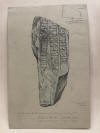
22.12.2022
Da ich bei der Durchsicht von verschiedenen Unterlagen auf etwas zum Runenstein von Jütland - 82 - Sønder Vilstrup stieß, habe ich mich nun mal an diese Seite gemacht. Es ist innerhalb von Jütland in meiner Liste von 1 - 82 das letzte Objekt, das es zu aktualisieren gilt. Die Fotos vom Juni 2022 hatte ich bereits eingearbeitet, nun galt es noch die Erkenntnisse aus meinem Kopenhagen Tripp vom September 2022 einzufügen. So z.B. die Einträge in den beiden frühen Werken von Johannes Meier, die als GKS 2371 kvart und als NKS 799 kvart in der Königlichen Bibliothek verwahrt werden.


21.12.2022
Heute habe ich nur die Fotografien vom 14.06.2022 in die Webseite von Jütland - 45 - Svenstrup eingepflegt. Dieser Runenstein wurde erst 1964 auf einem Feld beim Pflügen entdeckt, so dass es keine jahrhundertelange Historie einzupflegen galt.
20.12.2022
Gestern noch angefangen, aber nicht fertig geworden bin ich mit den Ergänzungen zu Jütland - 44 - Vester Tørslev, an die ich im Laufe des Tages nochmal drangemacht habe und nun abschließen konnte. Auch zu diesem Runenstein fanden sich in der Königlichen Bibliothek in Kopenhagen zwei Zeichnungen von Magnus Petersen in den Hinterlassenschaften von P.G. Thorsen (Datiert auf 05.09.1870) und Prof. Ludv. F. A. Wimmer (Datiert auf 04.08.1878).


19.12.2022
Für Jütland - 43 - Glenstrup habe ich es heute geschaftt die 2022er Neuerungen einzubringen und online zu stellen. Dabei waren auch diese Zeichnungen von Magnus Petersen aus dem Jahr 1882, die ich in Kopenhagen in der Königlichen Bibliothek im Nachlass von Prof. Ludv. F. A. Wimmer entdeckte.


17./18.12.2022
Zu Jütland - 40 - Klejtrup - und - 42 - Hobro - wurden die Fotos der Runensteine vom Juni 2022 eingearbeitet. Zu Hobro aber auch diverse Erkenntnisse / Fotos von alten Manuskripten / Zeichnungen usw. aus den Bibliotheken / Archiven in Kopenhagen aufbereitet und eingebunden. Das war wieder sehr aufwändig, da dieser Runenstein bereits seit 1623 bekannt ist und dementsprechend in zahlreichen Quellen über die Jahrhunderte Erwähnung fand. Highlights waren auch hier wieder die Zeichnung von Rasmus Henrik Kruse und die Zeichnungen von Magnus Petersen die er für P.G. Thorsen und für Prof. Ludv. F. A. Wimmer anfertigte. Nicht zu vergessen natürlich die frühen Abhandlungen von Johannes Mejer von 1654, in denen sich seltsamerweise jeweils zwei Zeichnungen zu dem erhaltenen Runenstein von Hobro (2) finden. Außerdem auch jeweils eine von dem wohl durch einen Brand um 1856 zerstörten Runenstein Hobro (1).


16.12.2022
Nach sehr langer Suche fand ich am 24.11.2022 im Internet über die Plattform "antikvariat.net" beim Ebeltoft Antiqvariat die zwei Bände von P.G. Thorsen mit dem Titel "De danske runemindesmærker beskrevne og forklarede, Anden Afdeling, Jyllands Runemindesmærker, tilligemed Meddelelser om alle Øernes. Afbildninger og Text, I. Afbildninger, 1879" und "De danske runemindesmærker beskrevne og forklarede, Anden Afdeling, Jyllands Runemindesmærker, tilligemed Meddelelser om alle Øernes. Afbildninger og Text, II. Text, 1880".

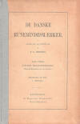

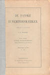

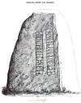

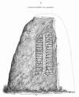
Die beiden Bücher haben nun auch schon etliche Jahre auf dem Buckel, was sich in Form von Stockflecken, mal mehr mal weniger, zeigt. Die Qualität der im Internet abrufbaren, digitalisierten Ausgabe mit den Zeichnungen von Magnus Petersen ist nicht wirklich gut. Aus diesem Band "Abbildungen" will ich nach und nach eigene Scans erstellen und auf meiner Webseite bringen. Heute habe ich versuchsweise mal einen Anfang mit den Abbildungen 1 und 2 - Klebæk Høje - gemacht. Hier links eigener Scan der Runensteinzeichnung, rechts Google Scan zum Vergleich.
Aber die Vervollständigung der Jütland Seiten mit den Bildern aus meiner diesjährigen Jütland-Wikingertour 6/2022 und das Einpflegen der Erkenntnissse aus meinem Kopenhagen Tripp 9/2022 haben jetzt erstmal Vorrang.
14.12.2022
Nun war es mir möglich zu Jütland - 39 - Durup (Nørager) meine Fotos vom 04.06.2022 und zwei Zeichnungen / Korrekturblätter aus dem Nachlass von Prof. Ludv. F. A. Wimmer zu dieserm Runenstein in die Webseite einzupflegen.
12.12.2022
Heute habe ich zu Jütland - 37 - Kongens Tisted die neuen Bilder aus meiner Jütland-Wikingertour im Juni 2022 und die Erkenntnisse aus meinem Kopenhagen Tripp 09/2022 eingearbeitet. In der Königlichen Bibliothek fand ich z.B. eine frühe Zeichnung von 1856 von Rasmus Henrik Kruse und zwei tolle Zeichnungen von Magnus Petersen aus den Jahren 1870 und 1878. Außerdem fand ich ein Schreiben zu dem Runenstein vom 10.06.1848 - vermutlich kurz nach dessen Auffindung verfasst - von Carl Christian Rafn an den "Bibliothecar P.G. Thorsen."

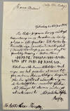
11.12.2022
In den letzten Tagen habe ich einige kleinere Nachträge an verschiedene Seiten vorgenommen, auf ich die ich im Detail nicht einzugehen brauche.
Aber zu Jütland - 37 - Ravnkilde - habe ich heute nun auch die Erkenntnisse aus meinem Kopenhagen Tripp 09/2022 einbringen können, nachdem ich die Fotos aus meiner Wikingertour 2022 bereits am 10.07.2022 eingepfelgt hatte (siehe unten).
06.12.2022
Heute fand ich die Zeit um die Seite zu Jütland - 36 - Giver zu aktualisieren. Der Runenstein wurde inzwischen restauriert, die Runeninschrift mit weißer Farbe nachgezeichnet und findet sich seit dem 04.10.2015 in der Kirche wieder. Eine Behandlung, die ihm sichtlich gut getan hat. Das sollten die Verantwortlichen auch zu anderen Runensteinen, deren Inschrift / Verzierung kaum mehr erkennbar ist, überdenken.
05.12.2022
Nun geht es weiter mit Jütland - 35 - Års, einem Runenstein mit Beschriftung auf zwei Seiten. Während die Seite B erstmals 1654 Erwähnung fand, wurde die verborgene Seite A, auf der er Jahrhunderte lang lag, erst 1838 entdeckt, als er auf Veranlassung von P. G. Thorsen, bereits tief in die Erde gesunken herausgeholt und aufgestellt wurde.
04.12.2022
Heute habe ich mir die Zeit genommen und habe die Seiten zu Jütland - 33 - Flejsborg - und - 34 - Farsø - mit den Fotos vom 14.06.2022 und im Falle von Flejsborg auch mit den Erkentnissen aus meinem Kopenhagen Tripp bestückt.
03.12.2022
In den letzten Tagen habe ich die Seiten zu Jütland - 30 - Suldrup und - 31 - Skivum optimiert. Bei Skivum bin ich nun an einem Ort angekommen, ab dem ich nicht nur die Erkenntnisse aus meinem Kopenhagen Tripp im diesjährigen September, sondern auch noch die Fotos aus meiner Jütland Tour im Juni 2022 einarbeiten muss.
Zu Skivum hat Rasmus Henrik Kruse (*07.08.1796 - 30.05.1877, Landschaftsmaler und Antiquar) in seinen Aufzeichnungen mit dem Titel "Nørre Jyllands Mærkværdigheder i det 19. Aarh. Hs. Bd 1-2 (med) Tillæg 1-2" auch eine echte Besonderheit verewigt. In dem Band "Tillæg 1" finden sich zwischen den Seiten 8 und 9 zwei Papierstreifen auf denen er kurze Passagen der Runeninschrift mittels einer Art Graphitpulver (wie ich vermute) abgebildet hat.
 In der oberen Zeile steht das erste Wort der Inschrift
In der oberen Zeile steht das erste Wort der Inschrift
 und in der unteren Zeile das letzte Wort der fünften Linie
und in der unteren Zeile das letzte Wort der fünften Linie
 .
.30.11.2022
Die letzten Tage habe ich etliche einzelne Seiten durchgesehen und dabei entdeckte Schreibfehler usw. erfasst und ausgemerzt.
Außerdem habe ich die Seiten zu Jütland - 25 - Hune - und - 29 - Lyngby auf den neuesten Stand gebracht. Auch hier galt es jeweils zahlreiche Informationen von meinem Kopenhagen Tripp im September aufzubereiten und einzupflegen.
10.11.2022
Gestern und heute habe ich mich an die beiden Runensteine von Jütland - 28 - Gunderup gemacht. Das waren wieder etliche Stunden Arbeit, bis alles an Informationen aus "Danmarks Runeindskrfiter", Lis Jacobsen/Erik Moltke, 1942, und das Material aus meinem Kopenhagen Tripp zusammengesucht und in Form gebracht war.
An der Stelle muss ich jetzt mal eine längere Pause mit den Ergänzungen machen.
08.11.2022
Heute habe ich zu Jütland - 27 - Ferslev die Ergänzungen vorgenommen. Dafür habe ich bestimmt vier Stunden gebraucht, bis alle Informationen gesammelt, alle Fotos aufbereitet waren usw. Es gab zu den beiden Runensteinen Ferslev 1 und 2 auch reichlich Material aufzuarbeiten, das ich von meinem Studientripp Kopenhagen mit nach Hause gebracht habe.
07.11.2022
Inzwischen habe ich mich an die Seite von Jütland - 24 - Jetsmark gemacht und die Ergänzungen aus den Aufzeichnungen von Rasmus Henrik Kruse aus dem "Antikvarisk-Topografisk Arkiv" in Kopenhagen und die Zeichnungen von Magnus Petersen aus den Hinterlassenschaften von P. G. Thorsen und Ludv. F. A. Wimmer aus der Königlichen Bibliothek Kopenhagen eingepflegt.
Außerdem fand ich heute noch die Zeit auch Jütland - 25 - Hune mit den Erkenntnissen aus meinem Studientripp nach Kopenhagen (23.- 29.09.2022) auf Vordermann zu bringen. Auch hier waren es wieder zuzmeist die Zeichnungen von Magnus Petersen aus den Hinterlassenschaften von P. G. Thorsen und Ludv. F. A. Wimmer aus der Königlichen Bibliothek Kopenhagen.
06.11.2022
Heute habe ich auf den Seiten von Læborg, Bække, Klebæk Høje und Horne noch die Zeichnungen von Magnus Petersen (*04.09.1827 - 01.02.1917, Archäologischer Zeichner und Restaurator) eingefügt, die sich im Nachlass von P. G. Thorsen in der Königlichen Bibliotek unter NKS 3296 kvart in der Pappschachtel 17 befinden. (Bezeichnet als: P. G. Thorsens optegnelser, tegninger m.m. vedrørende runer og runemindesmærker - überführt aus der Kopenhagener Universitätsbibliothek 1929 - Gemäß Ministerialschreiben vom 04.03.1929; früher benannt als Additamenta 612 kvart).
Außerdem habe ich heute noch zu Jütland - 21 - Vang die bei meinem Studientripp in Kopenhagen erlangten Informationen eingepflegt. Da gab es einiges zu tun. Von P. G. Thorsen, Rasmus Henrik Kruse, Jacob Kornerup, Ludv. F. A. Wimmer und vor allem von Magnus Petersen fanden sich zahlreiche Zeichnungen, Notizen usw.
05.11.2022
Heute habe ich abermals eine Änderung an der Webseite Jütland - 6 - Hovslund vorgenommen und noch diese Zeichnung von Magnus Petersen (*04.09.1827 - 01.02.1917, Archäologischer Zeichner und Restaurator) eingefügt, die ich in der Hinterlassenschaft - Schachtel 17 - von P. G. Thorsen (*07.08.1811 - 06.05.1883, Bibliothekar, Runenforscher und Historiker) in der Königlichen Bibliothek in Kopenhagen fand.

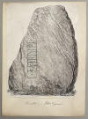
Außerdem habe ich vier Fotografien von dem handschriftlichen Originalentwurf aus dem Jahr 1623 von Ole Worm (*13.05.1588 - 31.08.1654, Arzt, Universalgelehrter und der Begründer der Runologie) zu seinem bahnbrechenden Werk von 1643, seiner "Danicorum Monumentorum Libri Sex, Hafniae, 1643" im Hinblick auf diesen Runenstein eingestellt. Die Handschrift wird heutzutage als GKS 2370 kvart in der Königlichen Bibliothek in Kopenhagen aufbewahrt.
01.11.2022
Heute habe ich zur Abwechslung mal Ergänzungen zu der Seite "Gunhild von Dänemark" vorgenommen. Aus den online gestellten mittelaterlichen Handschriften - British Library - Royal MS 14 B VI - f.4r - und - "Encomium Emmae Reginae" - British Library MS Add 33241 - habe ich das bisherige Bildchen zu Gunhild erneuert und zu ihren Eltern Knut und Emma weitere Bilder eingestellt. Zu den Eltern gibt es noch in einer weiteren Handschrift - MS Stowe 944 - in der British Library ein gemeinsames Bildnis.
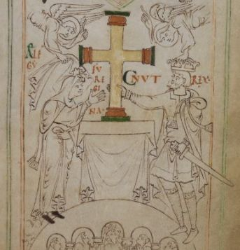
Außerdem habe ich die Verlinkungen aktualisiert und z.B. einen Verweis auf diese Abhandlung "Kloster Limburg an der Haardt - von Wilhelm Manchot (Architekt) - 1892" eingefügt. Zwischen Juni 2020 und Mai 2022 fand durch Dr.-Ing. Dominik Jelschewski ein umfassendes, hochwissenschaftliches Projekt zur Bauforschung an der Klosterruine statt. Zentrales Ziel des Projektes ist es, eine neue, aktuellen wissenschaftlichen Anforderungen entsprechende, baugeschichtliche Bearbeitung vorzulegen. Die Ergebnisse sollen über den Kreis von reinen Spezialisten hinaus verständlich dargestellt werden, um diesem Schlüsselbau seine ihm zustehende Rolle in der Architekturgeschichte zu geben.
28.10.2022
Zu der Webseite Jütland - 15 - Hanning - habe ich heute die Erkenntnisse / Fotos aus meinem Studientripp nach Kopenhagen eingefügt. Darunter die erste Zeichnung des Runensteins, die Rasmus Henrik Kruse (*07.08.1796 - 30.05.1877, Landschaftsmaler) im Jahr 1857 gefertigt hat. Er hat sie mit seinen handschriftlichen Ausführungen in seine Abhandlung "Nørre Jyllands Mærkværdigheder i det 19. Aarh. Hs. Bd 1-2 (med) Tillæg 1-2" in der Beilage (Tillæg) 2, S. 30-31, Bildtafel 17, aufgenommen.

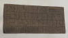